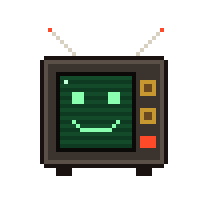
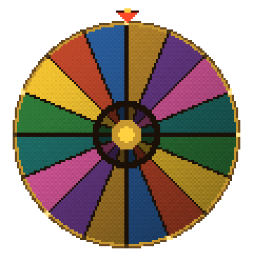
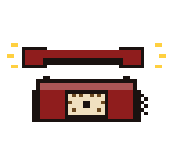
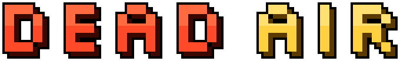

You wake up strapped into a contestant chair in an abandoned game-show studio.
The show is still broadcasting to no one. The host has a television for a head, and he is delighted you're here.
You owe The Network money. Every Deadline the debt comes due, and grows.
Spin the wheel. Let it ride. Miss a payment and the floor opens.

DEAD AIR is a prize-wheel gambling roguelite. Pull the lever, ride your streak, and decide when to bank it. Build a shelf of cursed artifacts, rig your own wheel in the Prize Cabinet, and take calls from a Producer who always has a deal for you. It's always a good deal. For him.

- Charge and spin. Hold the lever, release in the green band, and the wheel leans toward the big wedges.
- Tray or Vault. Winnings land in the Tray, where they're at risk. Every spin you don't deposit raises your Streak. Deposit to bank it safely in the Vault.
- Make the Deadline. Eight Deadlines, each debt bigger than the last. Pay it from the Vault, or the trapdoor decides.
- Rig the show. Spend Tokens in the Prize Cabinet: new wedges, rerolls, gilding, widening and narrowing. Artifacts on your shelf trigger left to right, so order matters.
- Answer the phone. The Producer calls between Deadlines with two deals and a hang-up. Hang up on him enough and someone else calls on the other line.

- A real physics wheel with an inner multiplier ring. Releases, pegs and flappers decide every spin.
- 50 artifacts, 37 phone bargains, 12 scratch cards, Sponsor's Challenges, and combos like ECHO, HAT TRICK, NEIGHBORS and DEAD AIR.
- Double or Nothing, once per Deadline, if you dare.
- A fully voiced cast: the Host, the Producer, the Other Line and the Archivist, and a score that warps as the tape wears down.
- A PS1-style studio rotting in real time: affine warp, dithering, CRT glow.
- Endless mode, unlockable starting wheels, stakes, and a Prop Room of lore to collect.
- Keyboard, mouse and gamepad. Captions, reduced flashing and colorblind wedge patterns.
| Look between stations | Arrow keys / WASD · mouse wheel · D-pad / left stick |
| Charge & spin | Hold SPACE (or the lever) · hold X / Square |
| Deposit / confirm | ENTER · A / Cross |
| Double or Nothing | D · Y / Triangle |
| Fast mode · Pause | F · ESC · RB / R1 · Start |
| Fullscreen (desktop) | F11 · Alt+Enter |
- Play in the browser right here, or download for Windows, macOS (Apple Silicon and Intel) or Linux.
- The itch.io app installs and updates the desktop builds automatically.
- macOS: the app isn't notarized yet. The first time, right-click the app and choose Open.
- Windows: if SmartScreen appears, choose More info → Run anyway.
- Linux: the itch app handles everything. For the download, run
dead-air in the folder.
- Saves are kept automatically. Quit any time from the pause menu, and the broadcast continues where you left off.
An original game: no real game show's name, logo or catchphrases are used.
Voices: custom ElevenLabs voices. Fonts: Silkscreen and VT323 (SIL Open Font License). Sound and music sources and licenses are listed in the game's Credits screen.
Contains simulated gambling with in-game money only. There are no real-money purchases or wagers.
